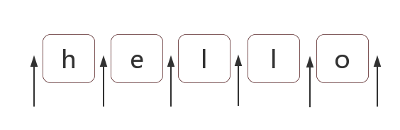

正则表达式是匹配模式，要么匹配字符，要么匹配位置。请记住这句话。
然而大部分人学习正则时，对于匹配位置的重视程度没有那么高。
本章讲讲正则匹配位置的总总。
内容包括：
位置是相邻字符之间的位置。比如，下图中箭头所指的地方：

在ES5中，共有6个锚字符：
^ $ \b \B (?=p) (?!p)
^（脱字符）匹配开头，在多行匹配中匹配行开头。
$（美元符号）匹配结尾，在多行匹配中匹配行结尾。
比如我们把字符串的开头和结尾用"#"替换（位置可以替换成字符的！）：
var result = "hello".replace(/^|$/g, '#');
console.log(result);
// => "#hello#"
多行匹配模式时，加入m,那么^,$是指每行的开头和结尾，这个需要我们的注意：
var result = "I\nlove\njavaScript".replace(/^|$/gm,'#');
console.log(result);
/*
#I#
#love#
#javascript#
*/\b是单词边界，具体就是\w和\W之间的位置，也包括\w和^之间的位置，也包括\w和$之间的位置。
比如一个文件名是"[JS] Lesson_01.mp4"中的\b，如下：
var result = "[JS] Lesson_01.mp4".replace(/\b/g, '#');
console.log(result);
// => "[#JS#] #Lesson_01#.#mp4#"
首先，我们知道，\w是字符组[0-9a-zA-Z_]的简写形式，即\w是字母数字或者下划线的中任何一个字符。而\W是排除字符组[^0-9a-zA-Z_]的简写形式，即\W是\w以外的任何一个字符。
此时我们可以看看"[#JS#] #Lesson_01#.#mp4#"中的每一个"#"，是怎么来的。
\B就是\b的反面的意思，非单词边界。例如在字符串中所有位置中，扣掉\b，剩下的都是\B的。
具体说来就是\w与\w、\W与\W、^与\W，\W与$之间的位置。
比如上面的例子，把所有\B替换成"#"：
var result = "[JS] Lesson_01.mp4".replace(/\B/g, '#');
console.log(result);
// => "#[J#S]# L#e#s#s#o#n#_#0#1.m#p#4"
(?=p)，其中p是一个子模式，即p前面的位置。
比如(?=l)，表示'l'字符前面的位置，例如：
var result = "hello".replace(/(?=l)/g, '#');
console.log(result);
// => "he#l#lo"
而(?!p)就是(?=p)的反面意思，比如：
var result = "hello".replace(/(?!l)/g, '#');
console.log(result);
// => "#h#ell#o#"
二者的学名分别是positive lookahead和negative lookahead。
中文翻译分别是正向先行断言和负向先行断言。
ES6中，还支持positive lookbehind和negative lookbehind。
具体是(?<=p)和(?<!p)。
有书上把这四个东西，翻译成环视，即看看右边或看看左边。
但一般书上，没有很好强调这四者是个位置。
比如(?=p)，一般都理解成：要求接下来的字符与p匹配，但不能包括p的那些字符。
而在本人看来(?=p)就与^一样好理解，就是p前面的那个位置。
对于位置的理解，我们可以理解成空字符""。
比如"hello"字符串等价于如下的形式：
"hello" == "" + "h" + "" + "e" + "" + "l" + "" + "l" + "o" + "";也等价于：
"hello" == "" + "" + "hello"因此，把/^hello$/写成/^^hello$$$/，是没有任何问题的：
var result = /^^hello$$$/.test("hello");
console.log(result);
// => true
甚至可以写成更复杂的:
var result = /(?=he)^^he(?=\w)llo$\b\b$/.test("hello");
console.log(result);
// => true
也就是说字符之间的位置，可以写成多个。
把位置理解空字符，是对位置非常有效的理解方式。
让你写个正则不匹配任何东西
/.^/因为此正则要求只有一个字符，但该字符后面是开头。
比如把"12345678"，变成"12,345,678"。
可见是需要把相应的位置替换成","。
思路是什么呢？
使用(?=\d{3}$)就可以做到：
var result = "12345678".replace(/(?=\d{3}$)/g, ',')
console.log(result);
// => "12345,678"
因为逗号出现的位置，要求后面3个数字一组，也就是\d{3}至少出现一次。
此时可以使用量词+：
var result = "12345678".replace(/(?=\d{3}+$)/g, ',')
console.log(result);
// => "12345,678"
写完正则后，要多验证几个案例，此时我们会发现问题：
var result = "123456789".replace(/(?=(\d{3})+$)/g, ',')
console.log(result);
// => ",123,456,789"
因为上面的正则，仅仅表示把从结尾向前数，一但是3的倍数，就把其前面的位置替换成逗号。因此才会出现这个问题。
怎么解决呢？我们要求匹配的到这个位置不能是开头。
我们知道匹配开头可以使用^，但要求这个位置不是开头怎么办？
(?!^)，你想到了吗？测试如下：
var string1 = "12345678",
string2 = "123456789";
reg = /(?!^)(?=(\d{3})+$)/g;
var result = string1.replace(reg, ',')
console.log(result);
// => "12,345,678"
result = string2.replace(reg, ',');
console.log(result);
// => "123,456,789"
如果要把"12345678 123456789"替换成"12,345,678 123,456,789"。
此时我们需要修改正则，把里面的开头^和结尾$，替换成\b：
var string = "12345678 123456789",
reg = /(?!\b)(?=(\d{3})+\b)/g;
var result = string.replace(reg, ',')
console.log(result);
// => "12,345,678 123,456,789"
密码长度6-12位，由数字、小写字符和大写字母组成，但必须至少包括2种字符。
此题，如果写成多个正则来判断，比较容易。但要写成一个正则就比较困难。
那么，我们就来挑战一下。看看我们对位置的理解是否深刻。
不考虑“但必须至少包括2种字符”这一条件。我们可以容易写出：
var reg = /^[0-9A-Za-z]{6,12}$/;
假设，要求的必须包含数字，怎么办？此时我们可以使用(?=.*[0-9])来做。也就是(?=.*[0-9])坐在位置的右边满足后续的匹配
因此正则变成：
var reg = /(?=.*[0-9])^[0-9A-Za-z]{6,12}$/;比如同时包含数字和小写字母，可以用(?=.*[0-9])(?=.*[a-z])来做。
因此正则变成：
var reg = /(?=.*[0-9])(?=.*[a-z])^[0-9A-Za-z]{6,12}$/;我们可以把原题变成下列几种情况之一：
同时包含数字和小写字母 同时包含数字和大写字母 同时包含小写字母和大写字母 同时包含数字、小写字母和大写字母 以上的4种情况是或的关系（实际上，可以不用第4条）。
最终答案是：
var reg = /((?=.*[0-9])(?=.*[a-z])|(?=.*[0-9])(?=.*[A-Z])|(?=.*[a-z])(?=.*[A-Z]))^[0-9A-Za-z]{6,12}$/;
console.log( reg.test("1234567") ); // false 全是数字
console.log( reg.test("abcdef") ); // false 全是小写字母
console.log( reg.test("ABCDEFGH") ); // false 全是大写字母
console.log( reg.test("ab23C") ); // false 不足6位
console.log( reg.test("ABCDEF234") ); // true 大写字母和数字
console.log( reg.test("abcdEF234") ); // true 三者都有
上面的正则看起来比较复杂，只要理解了第二步，其余就全部理解了。
/(?=.*[0-9])^[0-9A-Za-z]{6,12}$/对于这个正则，我们只需要弄明白(?=.*[0-9])^即可。
分开来看就是(?=.*[0-9])和^。表示开头前面还有个位置（当然也是开头，即同一个位置，想想之前的空字符类比）。
(?=.*[0-9])表示该位置后面的字符匹配.*[0-9]，即，有任何多个任意字符，后面再跟个数字。
翻译成大白话，就是接下来的字符，必须包含个数字。
本文来自 JS正则表达式完整教程（略长）[https://juejin.im/post/5965943ff265da6c30653879]